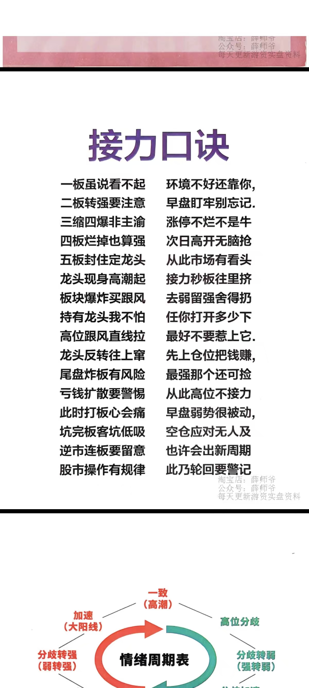

Selected Cycle
Pattern Library
共性规律
Reference
接力节奏参考
周期档案按“启动、加强、分化、回流、高潮、分歧”沉淀，保留时间周期、题材状态、身位股、核心票、梯队和风险信号。
- 当前来源
- 7.26 题材节奏表.xlsx / Sheet1!DD243:DI243
- 记录口径
- 以交易日为单位，先记节奏，再按短线侠每日复盘的概念分组记录涨停股和封板时间。
- 涨停明细来源
- 短线侠每日复盘 - 涨停复盘（按概念）

Operating Map
周期作战图谱
共性结论、量能路径、买卖点和每日证据统一落到同一个龙头周期。
-
01
题材定性
高潮后强上强，或分化后超强回流。
-
02
量能路径
识别均匀放量、缩量放量和五板补量。
-
03
买卖锚点
前置买点、确认买点、分歧卖点、红线后置。
-
04
单周期复盘
节奏路径、连板梯队和涨停明细交叉验证。
Volume Study
龙头爆量节点
按成交额相对放大、换手率、开板次数与封板窗口复核，只保留会改变周期节奏的关键爆量。
| 周期 | 关键爆量时间点 | 窗口后验证 |
|---|
Board Volume Matrix
连板量能统计
四档量能统一按连板均值标记，旁边补充当日成交额是首板量能的几倍，兼顾历史复盘与新周期实时观察。
Setup Library
量能组合与进场规律
九个周期按四板前量能准备、缩量确认和五板补量路径归类。
Trade Replay
董事长逻辑买卖点
把爆量、次日确认、高位分歧和监管红线连成同一条复盘动线。
| 周期 | 前置买点 | 标准买点 | 标准卖点 | 监管后置 |
|---|
这是历史复盘推演，不是实时交易建议。“100%红线”按董事长交易模型作观察标记；交易所正式口径（上交所 / 深交所）还涉及连续10个交易日收盘价格涨幅偏离值累计及其他严重异常波动条件。
Leader Cycle Archive
龙头周期复盘工作台
周期、节奏、涨停明细和规律沉淀集中在同一条复盘线上。
1
已记录周期
6
交易日
2026/7/17-2026/7/24
当前时间周期
已完成
2026/7/17-2026/7/24
电力
立新能源周期
Rhythm Path
节奏路径
Limit-Up Chain
连板涨停数据
Daily Ledger